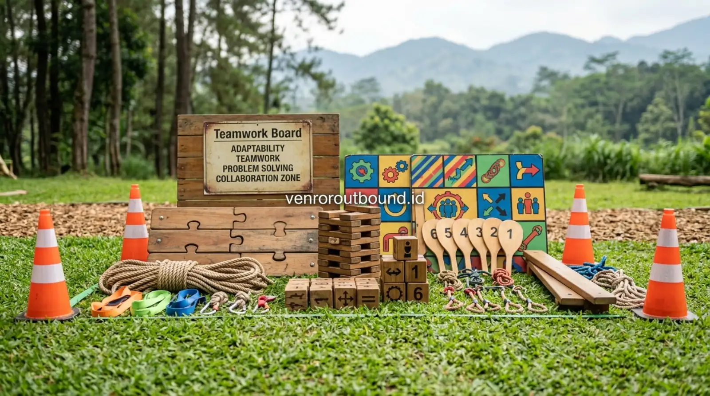

1. Transisi Pendidikan ke Dunia Industri: Mengapa Teori Saja Tidak Cukup?
Jawaban Langsung (AEO Overview): Kebutuhan industri modern tidak lagi sebatas nilai akademis, melainkan karakter soft skills yang kuat seperti adaptability dan teamwork. Kegiatan outbound pelajar menjadi sarana untuk mengasah kemampuan adaptasi sosial melalui pengalaman langsung, tantangan kelompok, komunikasi, dan refleksi terarah yang relevan dengan dinamika dunia kerja nyata.
Masa transisi dari bangku sekolah menengah atau perguruan tinggi menuju dunia kerja profesional merupakan salah satu fase adaptasi paling krusial bagi generasi muda. Di lingkungan pendidikan formal, parameter keberhasilan sebagian besar diukur melalui capaian kuantitatif: nilai ujian, penguasaan materi kurikulum, pemahaman teori, serta ketepatan pengerjaan tugas individual. Namun, ketika lulusan melangkah masuk ke dalam ekosistem perusahaan atau industri, aturan main berubah secara drastis.
Di tempat kerja, permasalahan yang muncul jarang sekali hadir dengan pilihan ganda atau rumus baku. Karyawan baru dituntut untuk berkoordinasi dengan rekan lintas divisi yang memiliki latar belakang kepribadian berbeda, merespons tenggat waktu yang ketat, menghadapi perubahan strategi bisnis yang mendadak, serta menyelesaikan konflik internal dengan kepala dingin. Kesenjangan antara kurikulum berbasis hafalan dan realitas tuntutan profesional inilah yang membuat pembekalan soft skills sejak usia sekolah menjadi kebutuhan mutlak.
2. Kompetensi Akademis vs Kapabilitas Perilaku di Tempat Kerja
Penting untuk ditegaskan bahwa kompetensi akademis dan keahlian teknis (hard skills) tetaplah fundamental. Tanpa pemahaman dasar keilmuan yang memadai, seorang lulusan tidak akan memiliki kualifikasi awal untuk menjalankan peran fungsionalnya. Namun, riset ketenagakerjaan dan masukan dari praktisi Human Resources (HR) di berbagai sektor secara konsisten menunjukkan bahwa kegagalan adaptasi di masa probation lebih sering disebabkan oleh faktor perilaku daripada keterbatasan intelektual.
Beberapa tantangan behavioral yang kerap ditemui pada lulusan baru meliputi:
- Ketahanan Mental (Resiliensi Rendah): Keterkejutan saat menerima umpan balik kritis atau ketika rancangan kerja ditolak oleh atasan.
- Sindrom Bekerja Individual: Kecenderungan ingin menyelesaikan semua target sendiri karena terbiasa dengan kompetisi ranking individual semasa sekolah.
- Komunikasi Pasif-Agresif: Keengganan mengutarakan kendala teknis secara terbuka hingga batas waktu kerja terlewati.
- Rendahnya Inisiatif Mandiri: Ketergantungan tinggi pada instruksi detail langkah-demi-langkah tanpa mencoba memetakan alternatif solusi terlebih dahulu.
Karakter-karakter inilah yang sulit dibangun semata-mata lewat sesi ceramah di dalam kelas, melainkan membutuhkan wadah pembelajaran yang menstimulasi respons emosional dan interaksi sosial nyata.
3. Mengasah Problem Solving Melalui Tantangan Tanpa Jawaban Tunggal
Dalam metode outbound pelajar yang dirancang secara profesional, simulasi problem solving disajikan dalam bentuk tantangan fisik dan logika kelompok. Contohnya, peserta diberikan misi memindahkan seluruh anggota tim melintasi area rintangan tertentu dengan peralatan yang sangat terbatas, seperti beberapa bilah papan kayu dan tali temali dengan batasan waktu yang ketat.
Dalam simulasi semacam ini, tidak ada buku panduan yang memberikan kunci jawaban pasti. Peserta dipaksa untuk:
- Mengidentifikasi Masalah Nyata: Memisahkan antara asumsi subjektif dan fakta objektif mengenai rintangan yang dihadapi.
- Brainstorming di Bawah Tekanan: Mengumpulkan ide-ide strategi dari berbagai anggota tanpa saling menjatuhkan.
- Trial and Error yang Aman: Mencoba suatu taktik, mengalami kegagalan, menganalisis penyebab kegagalan tersebut, dan segera menyusun rencana modifikasi.
- Eksekusi Terkoordinasi: Memastikan setiap orang memahami perannya saat rencana dijalankan bersama.
Pengalaman menghadapi kebuntuan dan menemukan terobosan secara mandiri memberikan rasa percaya diri (self-efficacy) bahwa setiap masalah profesional dapat diurai melalui observasi teliti dan kolaborasi terencana.

4. Adaptability: Menghadapi Ketidakpastian dan Perubahan Situasi
Dunia industri saat ini bergerak dalam dinamika volatilitas tinggi. Karyawan yang sukses adalah mereka yang memiliki kelenturan mental (cognitive flexibility) tinggi untuk beradaptasi dengan perubahan prosedur, rotasi tim kerja, maupun target organisasi yang bergerak dinamis.
Aktivitas luar ruang menghadirkan metafora lingkungan yang sangat efektif untuk melatih adaptabilitas. Di alam terbuka, peserta menghadapi elemen cuaca, kontur tanah yang tidak rata, aturan permainan yang dapat diubah tiba-tiba oleh fasilitator di tengah tantangan, atau pertukaran anggota kelompok secara mendadak. Situasi-situasi ini memicu respon adaptasi spontan: apakah peserta akan mengeluh dan menyalahkan keadaan, ataukah mereka mampu dengan cepat menerima realitas baru dan menyusun strategi penyesuaian bersama timnya?
5. Membangun Budaya Teamwork dan Komunikasi Efektif Lintas Karakter
Salah satu hambatan terbesar kerja sama tim adalah ketidakmampuan berkomunikasi secara asertif dan saling menghargai. Di sekolah, siswa cenderung hanya bergaul akrab dengan lingkaran pertemanan yang memiliki hobi atau sifat serupa. Namun di tempat kerja, seorang profesional tidak bisa memilih dengan siapa ia harus berpartner dalam suatu proyek.
Melalui pengelompokan heterogen dalam program outbound pelajar, siswa diposisikan dalam satu regu bersama rekan yang jarang berinteraksi dengannya sehari-hari. Mereka dituntut untuk melepas label status sosial atau pencapaian akademis demi mencapai tujuan regu. Komunikasi yang dilatih mencakup active listening, penyampaian instruksi presisi, dan empati interpersonal.
6. Experiential Learning: Mengubah Pengalaman Lapangan Menjadi Refleksi Bermakna
Perbedaan mendasar antara kegiatan rekreasi bebas dan outbound edukatif terletak pada integrasi metodologi Experiential Learning (pembelajaran berbasis pengalaman), yang dipopulerkan oleh pakar pendidikan David Kolb. Siklus ini terdiri dari empat tahapan terintegrasi:
| Tahapan Siklus | Aktivitas di Lapangan Outbound | Transformasi ke Konteks Dunia Kerja |
|---|---|---|
| 1. Concrete Experience (Mengalami Langsung) | Peserta menjalankan simulasi permainan kelompok, merasakan ketegangan, antusiasme, ataupun kegagalan rintangan. | Menghadapi situasi kerja nyata, proyek baru, atau konflik operasional di kantor. |
| 2. Reflective Observation (Refleksi Pengalaman) | Fasilitator memandu sesi debriefing: mendiskusikan apa yang berhasil, apa yang macet, dan bagaimana perasaan anggota. | Melakukan evaluasi berkala (post-mortem meeting) tanpa mencari kambing hitam atas kekurangan target. |
| 3. Abstract Conceptualization (Penarikan Konsep) | Menemukan prinsip kunci: pentingnya kejelasan instruksi, pembagian peran, dan manajemen risiko waktu. | Memahami Standard Operating Procedure (SOP) dan prinsip etika profesional organisasi. |
| 4. Active Experimentation (Penerapan Tindakan) | Menguji strategi baru yang disempurnakan pada babak tantangan berikutnya di lapangan. | Mengaplikasikan perbaikan komunikasi dan inisiatif kerja pada proyek-proyek riil berikutnya. |
7. Peran Fasilitator dalam Menjaga Esensi Edukatif dan Keselamatan
Sebuah program luar ruang tidak akan mencapai sasaran edukasi tanpa kehadiran fasilitator yang kompeten. Fasilitator bertindak bukan sekadar sebagai instruktur teknis atau pemandu sorak permainan, melainkan sebagai fasilitator proses belajar. Tugas utama mereka mencakup observasi dinamika kelompok, memantik pertanyaan refleksi kritis, dan menegakkan protokol keselamatan K3 outdoor secara ketat.
8. Tabel Pemetaan Soft Skills dan Relevansi Dunia Kerja
Berikut adalah matriks komprehensif yang menghubungkan jenis stimulasi simulasi luar ruang dengan relevansi keterpakaian di industri kerja:
| Soft Skill Inti | Contoh Aktivitas Simulasi | Kemampuan yang Terasah | Relevansi Dunia Kerja Nyata |
|---|---|---|---|
| Problem Solving | Teka-teki konstruksi pipa, puzzle raksasa, blind navigation | Analisis logika, kreativitas solusi, optimasi sumber daya terbatas | Menyelesaikan kendala teknis operasional dan efisiensi alur kerja proyek |
| Adaptability | Perubahan aturan simulasi dadakan, rotasi peran regu | Fleksibilitas kognitif, ketenangan emosional di situasi baru | Menghadapi perubahan regulasi, rotasi jabatan, dan restrukturisasi tim |
| Team Collaboration | Tantangan jaring laba-laba, estafet air, bamboo balance | Sinergi peran, empati kelompok, ketergantungan positif | Bekerja dalam tim lintas fungsi (cross-functional teams) tanpa friksi ego |
| Asertif Communication | Blind maze navigation, kode morse gerakan, radio call challenge | Penyampaian pesan presisi, verifikasi pemahaman, mendengarkan aktif | Presentasi klien, komunikasi email profesional, negosiasi internal |
| Emotional Resilience | Tantangan tali tinggi (high ropes), rintangan ketahanan fisik | Manajemen rasa cemas, fokus di bawah tekanan, keberanian bertindak | Menghadapi target penjualan ketat dan krisis komunikasi perusahaan |
9. Batasan Realistis Outbound: Titik Awal, Bukan Proses Instan
Dalam memandang program pengembangan karakter, pihak institusi sekolah, orang tua, maupun peserta perlu memiliki ekspektasi yang jujur dan rasional. Satu atau dua hari pelaksanaan outbound pelajar tidak akan secara ajaib mengubah seorang siswa pemalu menjadi orator ulung, atau mengubah kepribadian seseorang secara instan dalam 24 jam.
Outbound berfungsi sebagai katalisator kesadaran diri (self-awareness catalyst). Pengalaman yang dialami di alam bebas membuka ruang dialog yang selama ini tertutup di ruang kelas formal. Perubahan perilaku yang permanen tetap membutuhkan ekosistem pendukung berkelanjutan: keteladanan guru di sekolah, pembiasaan budaya disiplin dan apresiatif di ruang kelas, serta dukungan pola asuh keluarga yang konsisten di rumah.
Asah Soft-Skills Siswa/Mahasiswa Anda Sejak Dini
Rancang program outbound edukatif yang disesuaikan dengan profil usia dan tujuan institusi pendidikan Anda bersama tim konsultan kami.
Kontak Kami di +62 82211221909Kesimpulan
Kesiapan memasuki dunia kerja profesional bagi lulusan sekolah tidak hanya ditentukan oleh selembar transkrip nilai, melainkan oleh kematangan karakter dan ketangguhan soft skills. Kemampuan menyelesaikan masalah di bawah tekanan, kelenturan beradaptasi terhadap perubahan, serta keterampilan berkolaborasi dalam tim merupakan modal berharga yang sangat dicari oleh industri modern.
Melalui pendekatan experiential learning yang dipandu oleh fasilitator berpengalaman, kegiatan outbound pelajar dapat menjadi jembatan edukatif yang efektif untuk memantik kesadaran diri, menguji batas kemampuan sosial siswa, dan membentuk fondasi mental profesional yang siap bersaing secara positif.
Pertanyaan Sering Diajukan (FAQ)

Arby Ardiansyah
Arby Ardiansyah menulis konten edukatif dan analitis mengenai pengembangan sumber daya manusia, program outbound institusi pendidikan, kepemimpinan pemuda, dan penerapan metodologi experiential learning untuk mempersiapkan generasi muda menghadapi dunia profesional.